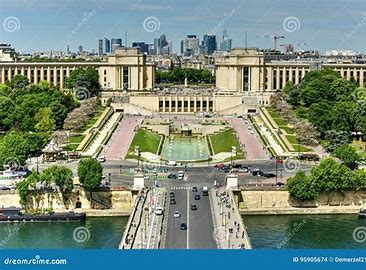
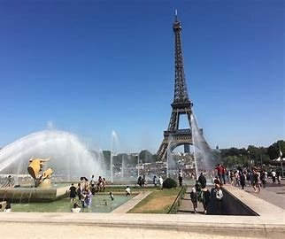

🌟 El Trocadero 🌟
🌿 Introducción al Trocadero 🌿
¡Chicos, prepárense! 👋 Ahora vamos a visitar un lugar espectacular en París: ¡El Trocadero! 🏞️ Es como un balcón gigante desde donde se ve la Torre Eiffel 🗼 en todo su esplendor, ¡perfecto para tomar fotos increíbles! 📸. Este sitio tiene jardines, fuentes mágicas y mucha historia. ¡Es un lugar perfecto para explorar, jugar y aprender algo nuevo! 🌈
📜 Historia del Trocadero 📜
¿Sabíais que el nombre "Trocadero" viene de una batalla en España? 🏰 En 1823, los franceses ganaron la Batalla de Trocadero en Cádiz, y en su honor, este lugar lleva ese nombre. Durante la Exposición Universal de 1878, aquí se construyó un enorme palacio que luego fue reemplazado por el actual Palacio de Chaillot. Este palacio tiene museos súper interesantes, pero también terrazas desde donde la Torre Eiffel parece una postal. ¡Es como viajar en el tiempo mientras estamos rodeados de belleza moderna! 🌍
💦 Jardines y Fuentes: Un Paraíso Acuático 💦
¡Atención, exploradores! 🌟 Aquí veremos los famosos Jardines del Trocadero, llenos de colores, flores y fuentes gigantes. 🪷 Las Fuentes de Varsovia son las estrellas del lugar, con chorros de agua que se elevan como si quisieran tocar el cielo. ⛲ ¡Es un espectáculo mágico para mirar y jugar cerca! No olvidéis dar un paseo entre los senderos o quizás correr detrás de las mariposas que revolotean por el jardín. 🦋
- Caminos de Aventura: Los jardines están llenos de senderos por los que podréis caminar, correr y descubrir rincones secretos. 🌳
- Zona para Jugar: ¡Espacio de sobra para estirarse, saltar y jugar! 🏃♂️
- Fotos con las Fuentes: ¡Tocad el agua de las fuentes y sacad fotos espectaculares con los chorros en el fondo! 📸
- Un Momento para Relajarse: Hay bancos y zonas de césped donde podremos descansar. Perfecto para recuperar energías. 🍎🌿
📸 Momentos para Capturar 📸
Este es el lugar perfecto para tomar fotos inolvidables. 🌟 Desde las terrazas, podréis ver la Torre Eiffel como nunca antes. ¡Es como un marco natural para el monumento! ¿Quién será el fotógrafo estrella del grupo? 📸🤩
🎒 Museos en el Palacio Chaillot 🎒
¿Sabíais que el Palacio Chaillot alberga museos? 🏛️ Podéis descubrir arte y cultura mientras paseáis por este lugar histórico. ¡Es como una cápsula del tiempo que guarda los secretos de París y el mundo! 🌍
Fotos del Trocadero

